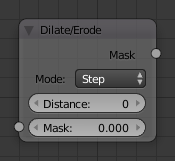
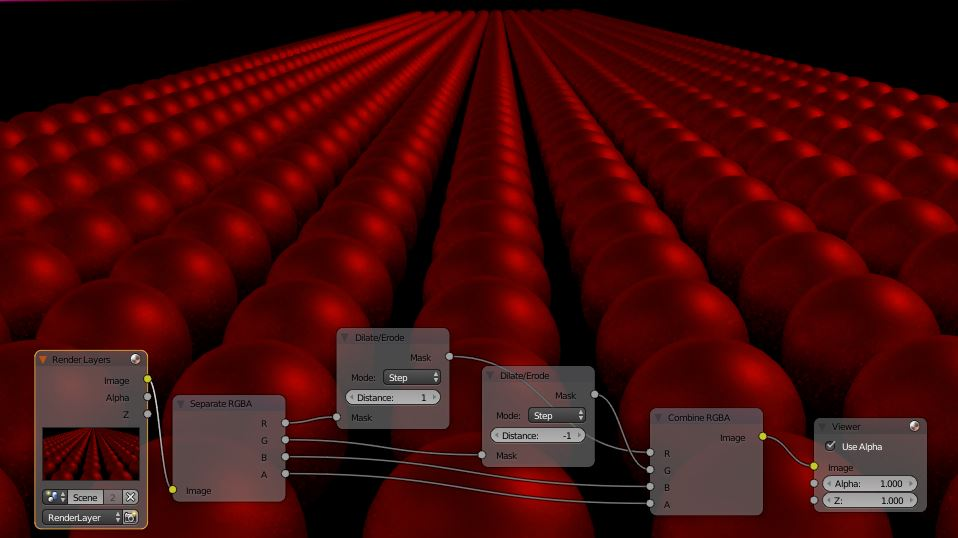

膨胀/腐蚀节点¶

膨胀/腐蚀节点。
The Dilate/Erode node provides a morphology (mathematical shape analysis) filter.
Inputs¶
- Mask
- Single color channel (or a black and white image) input.
Properties¶
- Mode
- Step, Threshold, Distance, Feather
- Distance
- The Distance is the filter radius. A positive value of Distance dilates (expands) the influence of a pixel on its surrounding pixels. A negative value erodes (shrinks) its influence.
Outputs¶
- Mask
- The filtered mask output.
Example¶
In this example image, we wanted to take the rather boring array of ball bearings and spruce it up; make it hot, baby. So, we dilated the red and eroded the green, leaving the blue alone. If we had dilated both red and green... (hint: red and green make yellow). The amount of influence is increased by increasing the Distance values. Blend file available here..
